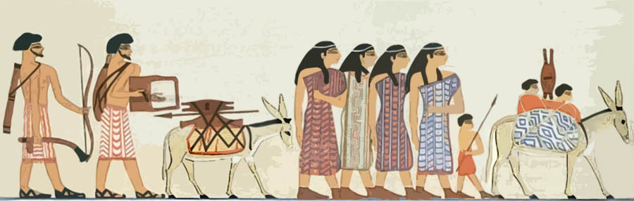
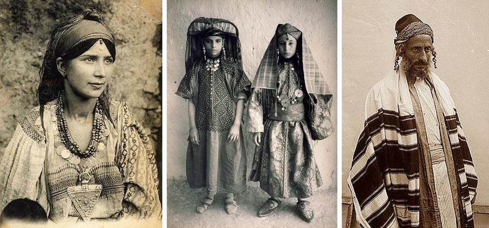
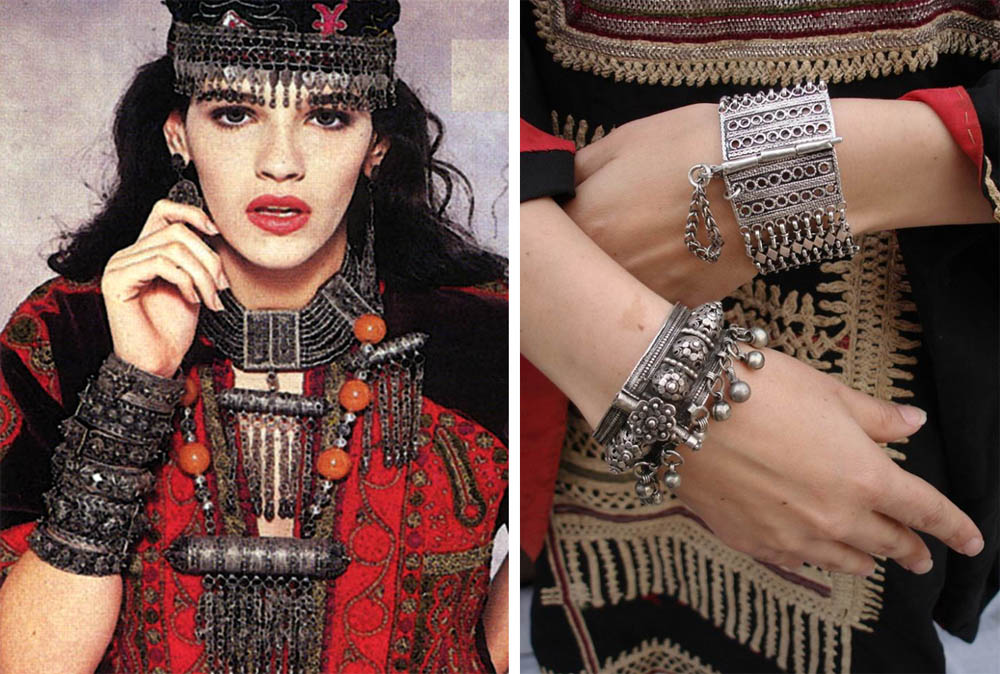
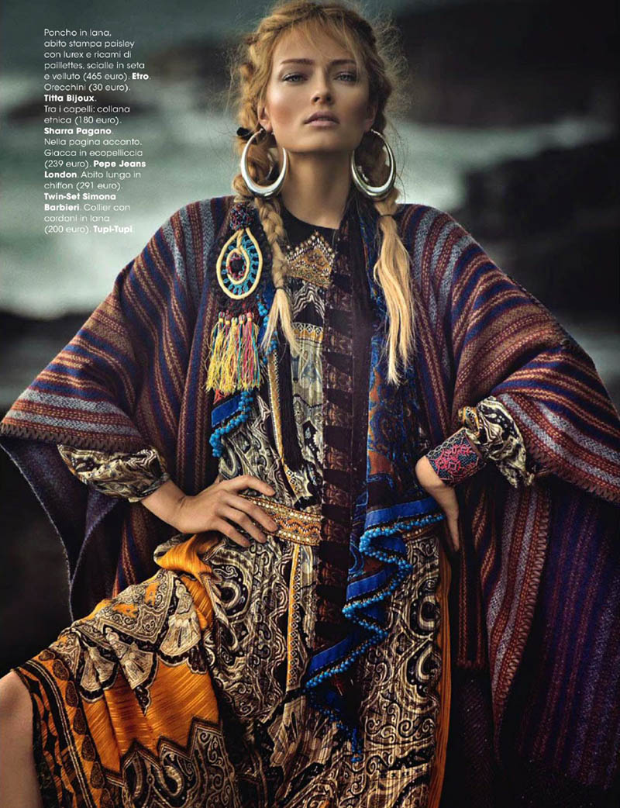
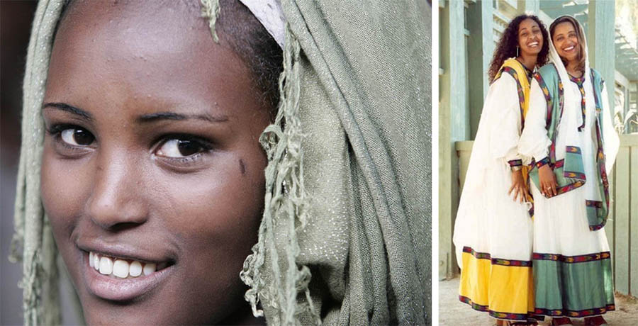

Prospects for Israeli Fashion
...we need to cast off the stiffness of European traditions of dress and look carefully at historical costume, at the national costumes of all the people who live in Eretz Israel.
Author: Lesya Repetivskaya. Translated from Russian.

Prospects for Israeli fashion
A forecast by Lesya Repetivskaya
All the photographs are borrowed and given as examples.
I think that Israeli fashion is now taking shape. The simplest option is to carry European traditions over here onto Israeli soil. And that is fundamentally wrong. The sheath dress will never take root in a tropical climate: it is hot, impractical, and no dress code requires it anywhere.

It seems to me that we need to cast off the stiffness of European traditions of dress and look carefully at historical costume, at the national costumes of all the people who live in Eretz Israel, give our imagination free rein, and on no account limit ourselves to black and white or draw certain prejudices into our lives.


It seems to me that the time has come for a truly tropical kind of clothing to be born: comfortable, practical, very bright and beautiful, fully in keeping with the beauty of the holy place, Israel, the land where we live, so that a dress is not lost against the flowering trees and a woman looks worthy in these divine surroundings.
Walking the streets, you can see where this or that person has come from. And the saddest thing is that my compatriots have contributed least of all to the distinctiveness of Israeli dress. They brought synthetic fabrics that are not needed here. They are impractical and nobody wears them. What gets in the way is a certain haughtiness of the European mentality, which simply will not accept that the East is its homeland today.
The way out of the inner slavery in which, alas, many immigrant women live for many reasons passes through looking at oneself with completely different eyes: seeing oneself as a beloved daughter of God, as an heiress, as a queen, and, finally, wrapping oneself not in brutal leggings but in beautiful, worthy clothes.

I am very pleased that the boho style has reached Israel. One of the branches of boho is ethno-boho, that is, national costume. And it seems to me that in Israel this style has quite large prospects. The many nationalities of this country (in Hebrew there is the expression "kibbutz galuyot", literally "the ingathering of the exiles", that is, the return of the exiled, the reunion of all Jews in Eretz Israel from all the countries of dispersion) imply a mixing of cultures, and in this whirlpool of cultures something truly stunning may arise.
The boho style

It is worth paying attention to, for example, the costume of Ethiopian Jews and looking at it closely. It is somewhat looked down upon. And quite wrongly. A new culture may be born precisely in national costume. Sometimes the way these ladies combine things that do not suit each other at all is not inferior to the catwalks of Paris. The boldness with which they do it borders on art. They have kept their national tradition, a special approach of their own.
Here in Israel I very much want to, and like to, walk about in long skirts. I want to return to the times when a woman's dress gave her a certain defencelessness. I love trousers, they are practical, but it seems to me that their time is slowly passing. That is my outsider's view :).
 Laughter Is No Sin. Sergey Lukyanov
Laughter Is No Sin. Sergey Lukyanov